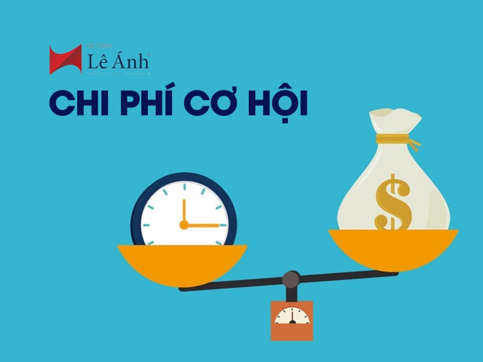

Chi phí cơ hội trong đời sống hằng ngày

Trong kinh tế học, “chi phí cơ hội” là một khái niệm cơ bản nhưng lại xuất hiện ở hầu hết mọi quyết định mà chúng ta đưa ra.
Hiểu đơn giản, chi phí cơ hội là giá trị của lựa chọn tốt nhất mà ta phải từ bỏ khi quyết định chọn một phương án khác.
Trong cuộc sống hàng ngày, chúng ta liên tục đối mặt với những lựa chọn. Ví dụ, khi bạn dành hai giờ để xem phim, chi phí cơ hội có thể là thời gian học bài, làm việc hoặc nghỉ ngơi. Dù bạn không phải trả tiền trực tiếp, nhưng bạn đã “trả giá” bằng việc từ bỏ những lựa chọn khác có thể mang lại lợi ích.
Chi phí cơ hội không chỉ liên quan đến thời gian mà còn gắn với tiền bạc và nguồn lực. Khi bạn dùng tiền để mua một chiếc điện thoại mới, chi phí cơ hội có thể là số tiền đó nếu được tiết kiệm, đầu tư hoặc chi cho những nhu cầu khác như du lịch hay học tập. Vì nguồn lực luôn có giới hạn, mỗi quyết định đều đi kèm với sự đánh đổi.
Trong công việc, chi phí cơ hội cũng rất rõ ràng. Một doanh nghiệp khi chọn đầu tư vào dự án A sẽ phải từ bỏ cơ hội đầu tư vào dự án B. Nếu dự án bị bỏ qua có tiềm năng sinh lời cao hơn, thì chi phí cơ hội của quyết định đó là phần lợi nhuận bị mất đi. Do đó, việc cân nhắc chi phí cơ hội giúp các nhà quản lý đưa ra quyết định hiệu quả hơn.
Điều quan trọng là chi phí cơ hội không phải lúc nào cũng dễ nhận ra. Nhiều người chỉ nhìn vào chi phí trực tiếp mà bỏ qua những giá trị vô hình như thời gian, cơ hội học hỏi hay trải nghiệm. Việc hiểu rõ khái niệm này giúp chúng ta suy nghĩ kỹ hơn trước khi lựa chọn, từ đó sử dụng nguồn lực một cách hợp lý.
Tóm lại, chi phí cơ hội là “cái giá ẩn” trong mọi quyết định. Dù là những lựa chọn nhỏ trong đời sống hay những quyết định lớn trong kinh doanh, việc nhận thức được chi phí cơ hội sẽ giúp chúng ta đưa ra lựa chọn sáng suốt và hiệu quả hơn.